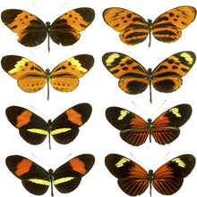
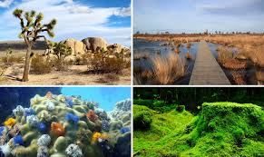

Ahora que sabes qué es la biodiversidad, debes estar al tanto de que existen tres tipos:

Ecosistemas terrestres: la mayoría de los seres vivos están adaptados para un hábitat en el que predomina el terreno o suelo. Estas zonas dónde la actividad de los seres vivos se desarrolla sobre la superficie de la tierra se llama biosfera. Es uno de los tipos de hábitat biológicamente más diversos y ricos; dependen de la cantidad de la humedad, la latitud y altitud o la temperatura. Estos últimos factores determinarán su clasificación, para ser englobados como desiertos, paramos, sabanas o bosques. Ecosistemas marinos: Son un tipo de ecosistema acuático, caracterizados por la presencia de agua salada como su principal componente. Dentro de los ecosistemas marinos se incluyen, a su vez, diferentes ecosistemas, como los océanos, mares, marismas, arrecifes, aguas someras litorales, estuarios, lagunas costeras de agua salada, costas rocosas y las zonas costeras.
